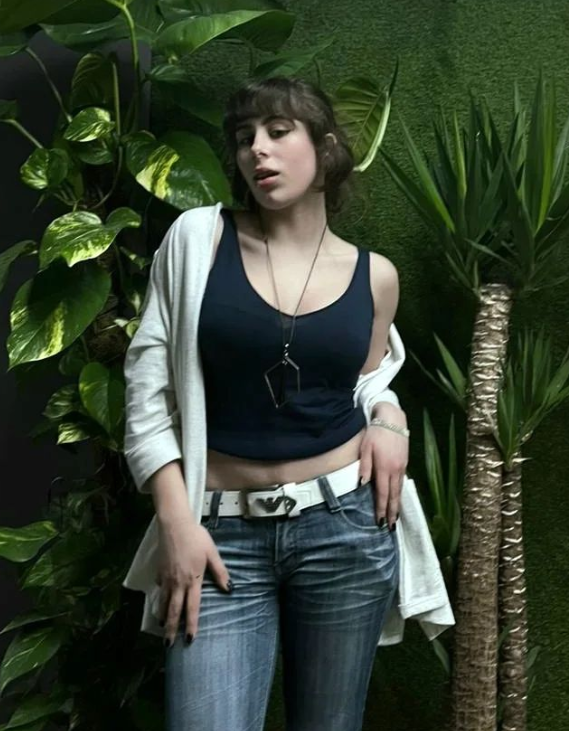
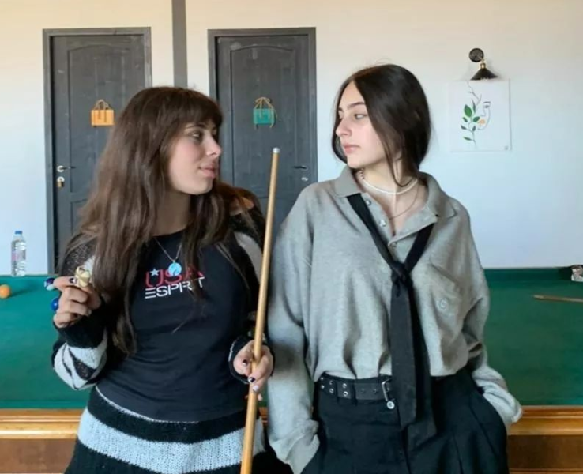

Mariam Arabuli
Malef'Ara
Mar'Siara
ვინ არის ლამაზმანი, რომელიც ბოლო პერიოდში მედიის ყურადღების ცენტრში მოექცა. ქართველი დივა, რომელმაც სულ რაღაც ერთ თვეში მილიონობით ადამიანი მიიზიდა თავისი სილამაზითა და შარმით. მარიამ არაბული მოულოდნელად გამოჩნდა ტელეეკრანებზე და მაშინვე ყველას ყურადღება მიიქცია თავისი განსაკუთრებული სილამაზით. ამ იდუმალი ადამიანის შესახებ უფრო მეტს გაიგებთ "ქართველი დივა"-ს რეპორტაჟში. ...მარიამ არაბული პროფესიით იურისტია. მას საკუთარი იურიდიული ფირმაც აქვს- სახელწოდებით Malef'Ara.როდესაც ვკითხეთ, თუ რას უკავშირდებოდა ეს სახელი, მან უბრალოდ ჩაიცინა და გვიპასუხა -ბავშვობაში მიყვარდა სიტყვებით თამაში. მთავარი კითხვა კი, რომელიც არაერთი მაყურებლისთვის მთავარ ინტერესის საგნად იქცა- პასუხგაუცემელი დარჩა. მარიამი შესანიშნავად უძღვება უზარმაზარ ფირმას, თუმცა აშკარაა რომ გართობასაც არ იკლებს. მას თაყვანისმცემლებმა ზედმეტსახელად "გულთამპყრობელი" შეარქვეს. მარიამის თაყვანისმცემლების რიცხვი სულ უფრო იზრდება და აღსანიშნავია, რომ მათ შორის მდედრობითი სქესის წარმომადგენლებიც მრავლად არიან. არაერთი სტატია დაიწერა არაბულის აღვირახსნილ ცხოვრებაზე, თუმცა საზოგადოებისთვის მაინც გაურკვეველია მისი პარტნიორის ვინაობა. ყოველი შემთხვევისთვის, თუ ასეთი ვინმე მართლაც არსებობს მის ცხოვრებაში,ბევრს ადამიანს დასწყვეტს გულს.
🔞Mariami's 18th birthday
მარიამი 9 იანვარს დაიბადა. თხის რქის მტკიცე ხასიათი ხშირად იჩენს თავს მის პროფესიულ და პირადულ გადაწყვეტილებებში. კითხვაზე, თუ რომელი იყო მისთვის ყველაზე დასამახსოვრებელი დაბადების დღე, მან ასეთი პასუხი გაგვცა:-მეთვრამეტე დაბადების დღე ჩემი ფავორიტი იყო.
მარიამ არაბულის მე-18 დაბადების დღემ საინტერესოდ ჩაიარა. " დაბადების დღეს ვულოცავ ყველაზე ლამაზ, ჭკვიან, ნიჭიერ შრომისმოყვარე გოგოს მსოფლიოში. მინდა რომ ეს წელი მისთვის დასახული მიზნების მიღწევების, საინტერესო და და დაუვიწყებელი წელი ყოფილიყოს. ყველაფერი საუკეთესო... მეამაყება რომ ჩემი და ჰქვია... ყველაზე მეტად მიყვარხარ ჩემო ჯიუტო თხის რქავ!!! ბედნიერი 🔞"- წერდა მისი და, ბარბარე არაბული სოციალურ ქსელში. "
მას არც მალეფის საუკეთესო მეგობარი მარიამ ოდიშელიძე ჩამორჩება და 12 საათის გახდომისთანავე აქვეყნებს პოსტს თვითერზე- "ჩემო ძვირფასო მეგობარო, მარიამ! უკვე სრულწლოვანი ხარ. 18 სახუმარო რიცხვი არ არის. ეს არის ასაკი, როდესაც შენ უფრო დამოუკიდებელი ხდები, თუმცა დამოუკიდებლობასთან ერთად პასუხისმგებლობაც იზრდება შენს ცხოვრებაში. ამან არ შეგაშინოს და ყველა დაბრკოლებას, რომელიც გზაზე გადაგეღობება, მედგრად შეხვდი. გისურვებ ცეცხლოვან მე-18 დაბადების დღეს და გიჟური თავგადასავლებით აღსავსე ცხოვრებას!🔥შენ მხოლოდ საუკეთესოს იმსახურებ! მიყვარხარ!👄